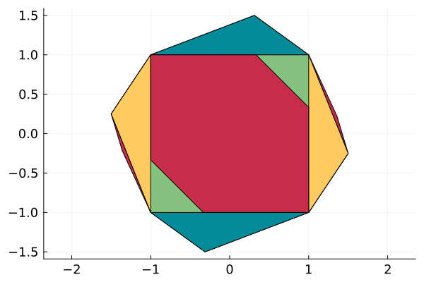
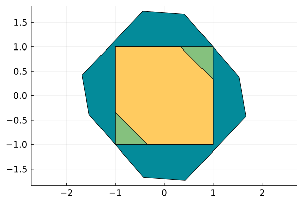
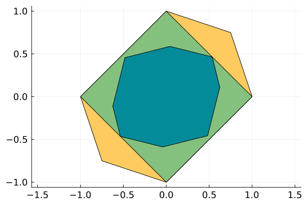
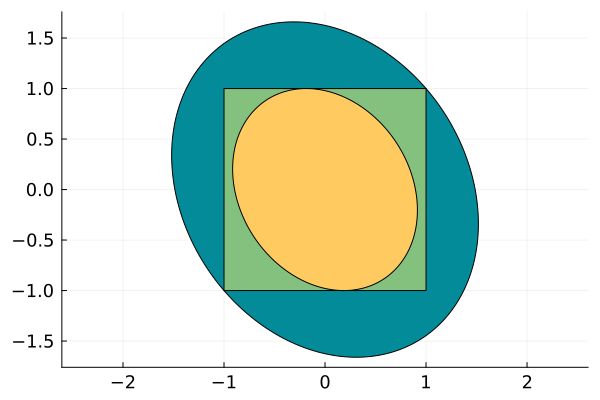
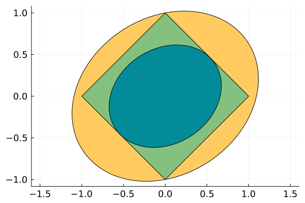
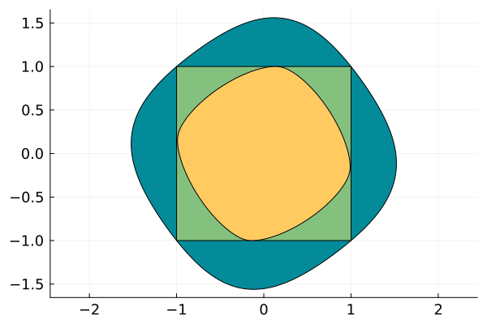
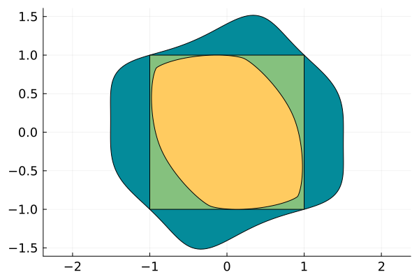
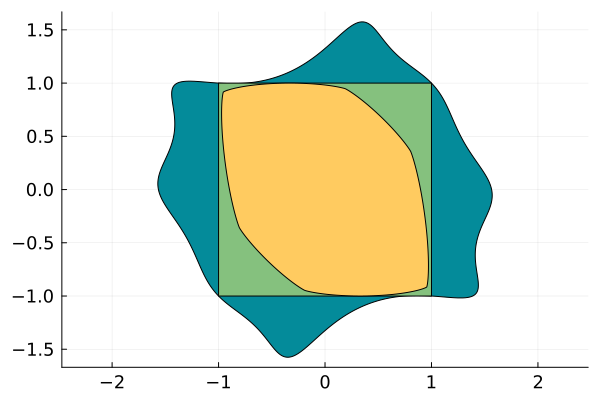

Discrete-time Switched Invariant Set


Introduction
In this notebook, we compute the maximal (resp. minimal) invariant set contained in the square with vertices $(\pm 1, \pm 1)$ for the system
\[\begin{aligned} x_{k+1} & = -y_k\\ y_{k+1} & = x_k. \end{aligned}\]
The system is $x_{k+1} = Ax_k$ where
\[A = \begin{bmatrix} 0 & -1\\ 1 & 0 \end{bmatrix}.\]
A set $S$ is controlled invariant if $AS \subseteq S.$
We need to pick an LP and an SDP solver, see here for a list of available ones. Run one of the following two cells to choose choose the solver.
using SetProg
import HiGHS
lp_solver = optimizer_with_attributes(HiGHS.Optimizer, MOI.Silent() => true)
import Hypatia
sdp_solver = optimizer_with_attributes(Hypatia.Optimizer, MOI.Silent() => true)
using Polyhedra
lib = DefaultLibrary{Float64}(lp_solver)
h = HalfSpace([1, 0], 1.0) ∩ HalfSpace([-1, 0], 1) ∩ HalfSpace([0, 1], 1) ∩ HalfSpace([0, -1], 1)
□ = polyhedron(h, lib)
◇ = polar(□)
A1 = [-1 -1
-4 0] / 4
A2 = [ 3 3
-2 1] / 4
A = [0.0 -1.0
1.0 0.0]
function maximal_invariant(template, heuristic::Function)
solver = if template isa Polytope
lp_solver
else
sdp_solver
end
model = Model(solver)
@variable(model, S, template)
@constraint(model, S ⊆ □)
@constraint(model, A1 * S ⊆ S)
@constraint(model, A2 * S ⊆ S)
@objective(model, Max, heuristic(volume(S)))
optimize!(model)
@show solve_time(model)
@show termination_status(model)
@show objective_value(model)
return value(S)
end
function minimal_invariant(template, heuristic::Function)
solver = if template isa Polytope
lp_solver
else
sdp_solver
end
model = Model(solver)
@variable(model, S, template)
@constraint(model, □ ⊆ S)
@constraint(model, A1 * S ⊆ S)
@constraint(model, A2 * S ⊆ S)
@objective(model, Min, heuristic(volume(S)))
optimize!(model)
@show solve_time(model)
@show termination_status(model)
@show objective_value(model)
@show JuMP.objective_sense(model)
return value(S)
end
using Plots
function hexcolor(rgb::UInt32)
r = ((0xff0000 & rgb) >> 16) / 255
g = ((0x00ff00 & rgb) >> 8) / 255
b = ((0x0000ff & rgb) ) / 255
Plots.RGBA(r, g, b)
end # Values taken from http://www.toutes-les-couleurs.com/code-couleur-rvb.php
lichen = hexcolor(0x85c17e)
canard = hexcolor(0x048b9a)
aurore = hexcolor(0xffcb60)
frambo = hexcolor(0xc72c48)
function primal_plot(min_sol, max_sol; npoints=256, args...)
plot(ratio=:equal, tickfont=Plots.font(12); args...)
plot!(min_sol, color=canard, npoints=npoints)
plot!(□, color=lichen)
plot!(max_sol, color=aurore, npoints=npoints)
end
function polar_plot(min_sol, max_sol; npoints=256, args...)
plot(ratio=:equal, tickfont=Plots.font(12); args...)
plot!(polar(max_sol), color=aurore, npoints=npoints)
plot!(◇, color=lichen)
plot!(polar(min_sol), color=canard, npoints=npoints)
endpolar_plot (generic function with 1 method)Polyhedral template
Fixed point approach
This section shows fixed point approach for computing a polyhedral maximal invariant set. We implement the fixed point iteration of the standard viability kernel algorithm with the following function. A more sophisticated approach specialized for discrete-time linear switched systems is available in SwitchOnSafety.
function backward_fixed_point_iteration(set::Polyhedron)
new_set = set ∩ (A1 \ set) ∩ (A2 \ set)
removehredundancy!(new_set)
return new_set
endbackward_fixed_point_iteration (generic function with 1 method)We start with $[-1, 1]^2$ and obtain the maximal invariant set after one iteration.
max_polytope_1 = backward_fixed_point_iteration(□)Polyhedron DefaultPolyhedron{Float64, Polyhedra.Intersection{Float64, Vector{Float64}, Int64}, Polyhedra.Hull{Float64, Vector{Float64}, Int64}}:
6-element iterator of HalfSpace{Float64, Vector{Float64}}:
HalfSpace([0.0, 1.0], 1.0)
HalfSpace([0.0, -1.0], 1.0)
HalfSpace([-1.0, 0.0], 1.0)
HalfSpace([1.0, 0.0], 1.0)
HalfSpace([0.75, 0.75], 1.0)
HalfSpace([-0.75, -0.75], 1.0)We can see that it has already converged.
backward_fixed_point_iteration(max_polytope_1)Polyhedron DefaultPolyhedron{Float64, Polyhedra.Intersection{Float64, Vector{Float64}, Int64}, Polyhedra.Hull{Float64, Vector{Float64}, Int64}}:
6-element iterator of HalfSpace{Float64, Vector{Float64}}:
HalfSpace([0.0, 1.0], 1.0)
HalfSpace([0.0, -1.0], 1.0)
HalfSpace([-1.0, 0.0], 1.0)
HalfSpace([1.0, 0.0], 1.0)
HalfSpace([-0.75, -0.75], 1.0)
HalfSpace([0.75, 0.75], 1.0)We now turn to the minimal invariant set with the following iteration:
function forward_fixed_point_iteration(set::Polyhedron)
new_set = convexhull(set, A1 * set, A2 * set)
removevredundancy!(new_set)
return new_set
endforward_fixed_point_iteration (generic function with 1 method)We start with $[-1, 1]^2$ and obtain the minimal invariant set after three iteration.
min_polytope_1 = forward_fixed_point_iteration(□)Polyhedron DefaultPolyhedron{Float64, Polyhedra.Intersection{Float64, Vector{Float64}, Int64}, Polyhedra.Hull{Float64, Vector{Float64}, Int64}}:
6-element iterator of Vector{Float64}:
[-1.0, -1.0]
[-1.5, 0.25]
[-1.0, 1.0]
[1.0, 1.0]
[1.5, -0.25]
[1.0, -1.0]We see below that the second iteration was indeed needed.
min_polytope_2 = forward_fixed_point_iteration(min_polytope_1)Polyhedron DefaultPolyhedron{Float64, Polyhedra.Intersection{Float64, Vector{Float64}, Int64}, Polyhedra.Hull{Float64, Vector{Float64}, Int64}}:
8-element iterator of Vector{Float64}:
[-0.3125, -1.5]
[-1.0, -1.0]
[-1.5, 0.25]
[-1.0, 1.0]
[0.3125, 1.5]
[1.0, 1.0]
[1.5, -0.25]
[1.0, -1.0]And the third iteration as well.
min_polytope_3 = forward_fixed_point_iteration(min_polytope_2)Polyhedron DefaultPolyhedron{Float64, Polyhedra.Intersection{Float64, Vector{Float64}, Int64}, Polyhedra.Hull{Float64, Vector{Float64}, Int64}}:
10-element iterator of Vector{Float64}:
[-0.3125, -1.5]
[-1.0, -1.0]
[-1.359375, -0.21875]
[-1.5, 0.25]
[-1.0, 1.0]
[0.3125, 1.5]
[1.0, 1.0]
[1.359375, 0.21875]
[1.5, -0.25]
[1.0, -1.0]We see below that it has converged
forward_fixed_point_iteration(min_polytope_3)Polyhedron DefaultPolyhedron{Float64, Polyhedra.Intersection{Float64, Vector{Float64}, Int64}, Polyhedra.Hull{Float64, Vector{Float64}, Int64}}:
10-element iterator of Vector{Float64}:
[-0.3125, -1.5]
[-1.0, -1.0]
[-1.359375, -0.21875]
[-1.5, 0.25]
[-1.0, 1.0]
[0.3125, 1.5]
[1.0, 1.0]
[1.359375, 0.21875]
[1.5, -0.25]
[1.0, -1.0]Let's see this visually
plot(ratio=:equal, tickfont=Plots.font(12))
plot!(min_polytope_3, color=frambo)
plot!(min_polytope_2, color=canard)
plot!(min_polytope_1, color=aurore)
plot!(□, color=lichen)
plot!(max_polytope_1, color=frambo)
Linear programming approach
As introduced in [R21], we can search over all polyhedra with a given face fan. The partition can be defined by the face fan of a given polytope as described in [Eq. (4.6), R21]. For maximal_invariant, because the sets are represented with the support function, the fan will be used for the face fan of the polar set the face fan of the primal set will depend on the value of the support function on each piece. For minimal_invariant, the sets are represented with the gauge function, the fac will therefore be used for the face fan of the primal set.
[R21] Raković, S. V. Control Minkowski–Lyapunov functions Automatica, Elsevier BV, 2021, 128, 109598
We use the face fan of the polytope pieces8 (which has the same face fan as the octogon convexhull(□, √2 * ◇)).
pieces8 = convexhull(□, 1.25 * ◇)
max_polytope = maximal_invariant(Polytope(symmetric=true, piecewise=pieces8), L1_heuristic)
min_polytope = minimal_invariant(Polytope(symmetric=true, piecewise=polar(pieces8)), L1_heuristic)
primal_plot(min_polytope, max_polytope)
The polar plot is as follows:
polar_plot(min_polytope, max_polytope)
Ellipsoidal template
We now consider the ellipsoidal template. The ellipsoids of maximal volume are given as follows:
max_ell_vol = maximal_invariant(Ellipsoid(symmetric=true), nth_root)
min_ell_vol = minimal_invariant(Ellipsoid(symmetric=true), nth_root)
primal_plot(min_ell_vol, max_ell_vol)
All ellipsoids are convex so we can also obtain the polar plot:
polar_plot(min_ell_vol, max_ell_vol)
The ellipsoids of maximal sum of squared length of its axis.
max_ell_L1 = maximal_invariant(Ellipsoid(symmetric=true), vol -> L1_heuristic(vol, ones(2)))
min_ell_L1 = minimal_invariant(Ellipsoid(symmetric=true), vol -> L1_heuristic(vol, ones(2)))
primal_plot(min_ell_L1, max_ell_L1)And the polar plot is:
polar_plot(min_ell_vol, max_ell_vol)Polyset template
We generalize the previous template to homogeneous polynomials of degree $2d$. As objective, we use the integral of the polynomial used to represent the set (either in the support function for maximal_invariant or in the gauge function for minimal_invariant) over the square □. We start with quartic polynomials.
max_4 = maximal_invariant(PolySet(symmetric=true, convex=true, degree=4), vol -> L1_heuristic(vol, ones(2)))
min_4 = minimal_invariant(PolySet(symmetric=true, degree=4), vol -> L1_heuristic(vol, ones(2)))
primal_plot(min_4, max_4)
We now obtain the results for sextic polynomials, note that we do not impose the sets to be convex for minimal_invariant. This is why we don't show the polar plot for polysets.
max_6 = maximal_invariant(PolySet(symmetric=true, convex=true, degree=6), vol -> L1_heuristic(vol, ones(2)))
min_6 = minimal_invariant(PolySet(symmetric=true, degree=6), vol -> L1_heuristic(vol, ones(2)))
primal_plot(min_6, max_6)
The nonconvexity is even more apparent for octic polynomials.
max_8 = maximal_invariant(PolySet(symmetric=true, convex=true, degree=8), vol -> L1_heuristic(vol, □))
min_8 = minimal_invariant(PolySet(symmetric=true, degree=8), vol -> L1_heuristic(vol, □))
primal_plot(min_8, max_8, npoints=1024)
This page was generated using Literate.jl.